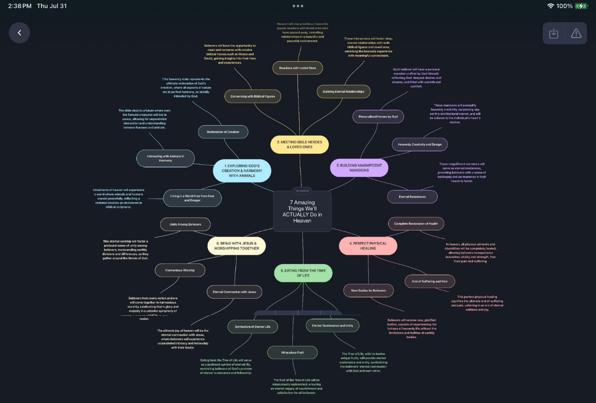

Erv, if you get a chance, you should read Randy Alcorn's book Heaven. He cites over 500 Scriptures in it and it's a genuinely life-changing book. Amazing.
How are you? Happy it's Friday? Looking forward to the weekend? I'm just doing okay — probably a little less than okay, but I wanted to share something before I retreat from this day.
Do you recall when we were studying Revelation how adamant I was that we won't just be sitting around singing worship songs all day once we get to heaven? Reading through the Bible every year has made it obvious to me that we were made for more than that — that everything touching our lives has a purpose found in God. I'll confess I don't know all of what God has for us in heaven. I know we'll serve Him (Rev 22:3 — meaningful work?). We'll reign with Him (Rev 22:5 — responsibility, stewardship, leadership?). I know we'll judge angels. We'll know as we are fully known — though I still wonder if that's instant or if all of eternity will be constant learning and knowing more of God. But I know there's more. I sort of bypassed fully answering this before by just saying “we'll do stuff in heaven.” Related to that — look at what's described as happening there. People from every nation will make pilgrimages to the New Jerusalem to worship and learn from Jesus. Some nations will serve alongside Israel. We'll celebrate the Jewish festivals regularly. Mortals will live, marry, and have children, at least during the Thousand Year Reign of Christ. So you can see why I just said “stuff.”
I recall that before my father-in-law died, he was reading a book called Destined for the Throne. It was not, despite what I might have implied to you all once as a joke, a prophetic book about how Elvis would die on the toilet. It was here that the seeds of “what do we actually do in heaven” were first sewn for me. I could see a far-away look in his eyes whenever he talked about it.
Well, I came across something I think is genuinely helpful in answering this question — on YouTube, of course. Here's the video, only about 20 minutes but worth it. One thing that struck me is how the video's creator projects many, maybe all, of the things that were happening in the Garden of Eden as continuing once again in heaven forever. That makes sense — I sort of already knew it, but the video helped me wrap my brain around it further.
For those of you who are visual learners like me, I made a Mind Map of the video — graphs and charts are critical for my brain to hold onto things.

Watching the video and thinking on this has greatly encouraged me. It's almost unfathomable — too wonderful, too glorious. But who am I to argue with God? — Erv
Comments